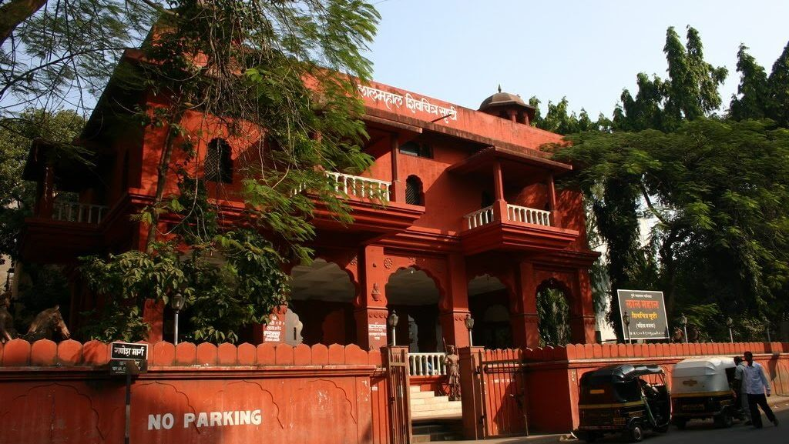
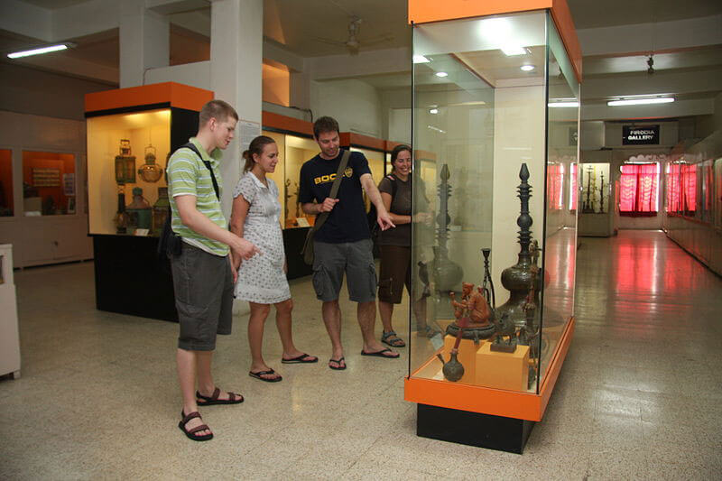
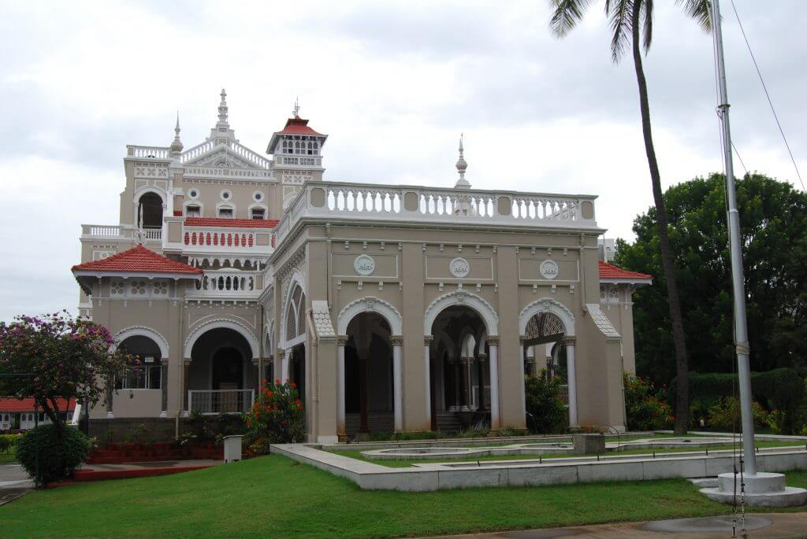
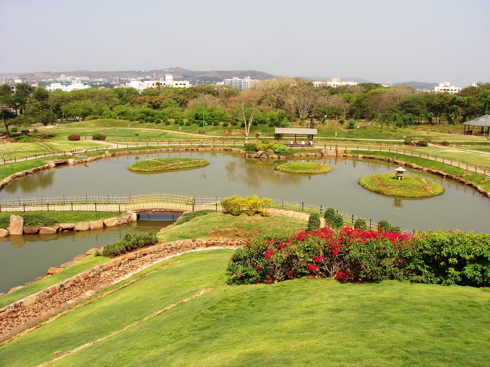
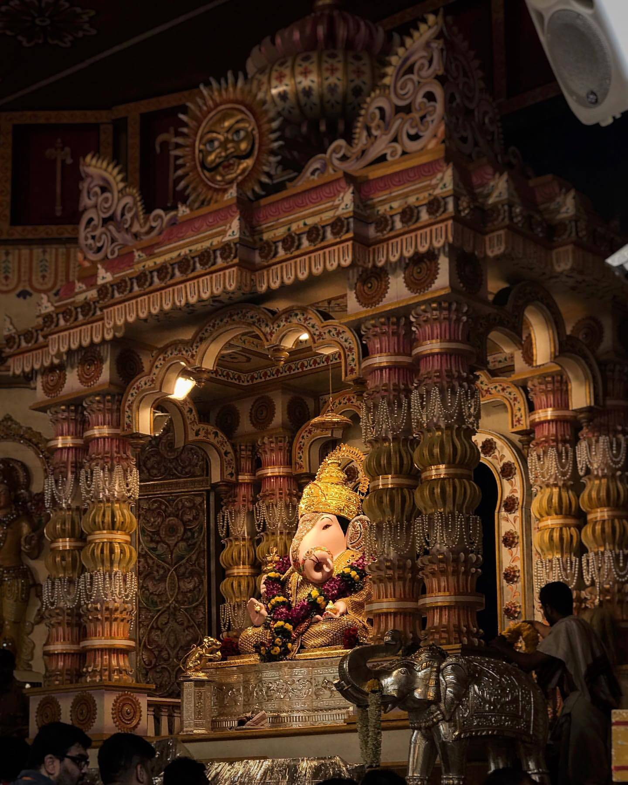

Pune is a beautiful city and has been a place of political and economic activities for centuries
- Historical Places:
Pune was the capital of the Maratha Empire and later of Peshawe Empire. So, there are a lot of historically significant places.
- Lal mahal :
Its a place where Chatrapati Shivaji Maharaj spent his childhood. Now it’s converted to a museum. Shahista khan stayed here while he laid siege to Pune city, and Shivaji Maharaj attempted to assassinate him(it failed), but Shahista khan ran away, and the blockade was released.

- Shaniwar Wada :
Residence of Peshawa(prime minister) of Maratha confederacy. Although it has not survived in its full form, it’s a beautiful place.
- Kelkar museum :
Museum houses ancient Marathi social and warrior artifacts.
Houses replica of Mastani Mahal(2nd wife of one of Peshawa).

- Aga Khan Palacestrong :
The Aga Khan Palace is a museum on Nagar Road. It served as a prison for Mahatma Gandhi and Kasturba Gandhi post the launch of the Quit India Movement. Kasturba Gandhi was laid to rest here. It has various personal artifacts of Mahatma and Kasturba Gandhi and a neat garden.

- For Foodies:
- Ganesh Bhel for chat(although any chat place is nice, just check if it is crowded)
- Vada Pav and Poha are served at almost all the sites and are all good. Joshi Wadewale is famous.
- For misal pav ‘Bedekar misal’ and ‘Katakir’ are renowned.
- Goodluck cafe
- Sujata Mastani
- Also, give Visit to Chitale and Kaka Halwai for sweets and Namkeen.
- Trekking
There are many forts around the city(Pratapgad, Raigad, Singhnad), but you would have to travel outside Pune city to visit them.

sinhgad
- For shopping:
There are many franchise stores, but I would recommend visiting Tusli Bag . It's over a century old place, and you will get to see the culture.
- Rajiv Gandhi zoo and Katraj zoo
- P L Deshpande Garden

- Dagdusheth temple

- Saras bag
The garden used to house actual Saras birds, even though now there aren't the birds, it's still a neat garden.
Besides all of this, do visit the old city to see ‘Puneri’ culture.